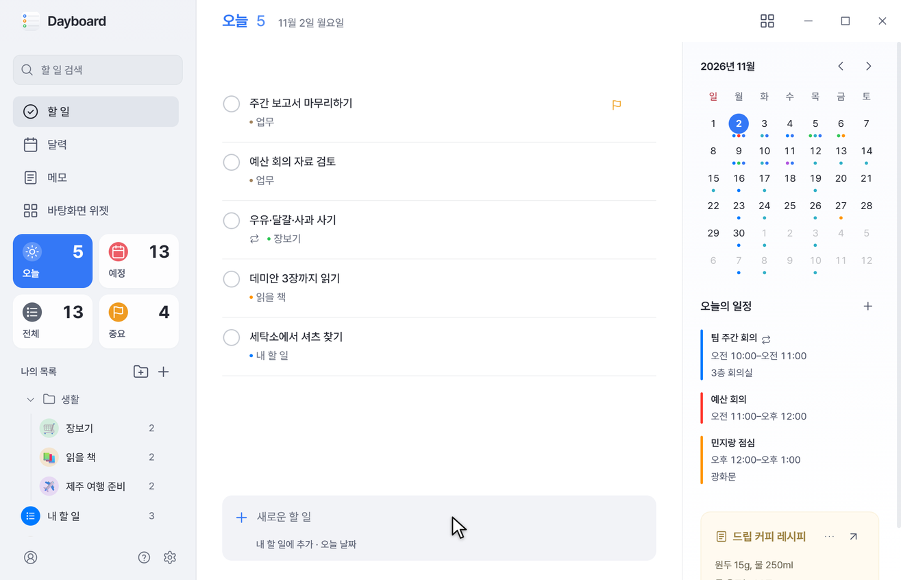
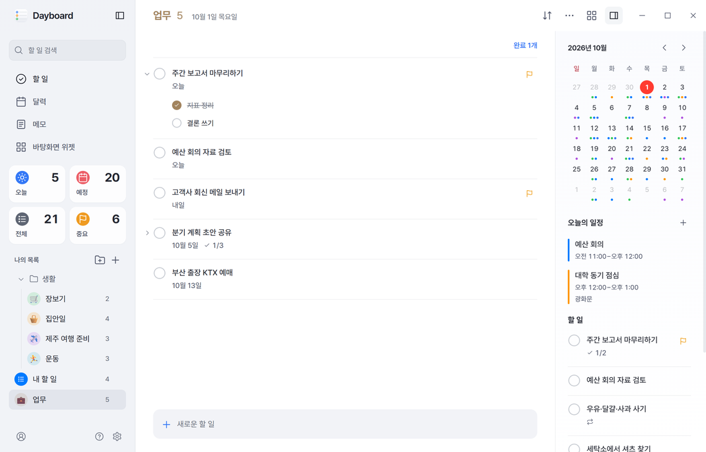
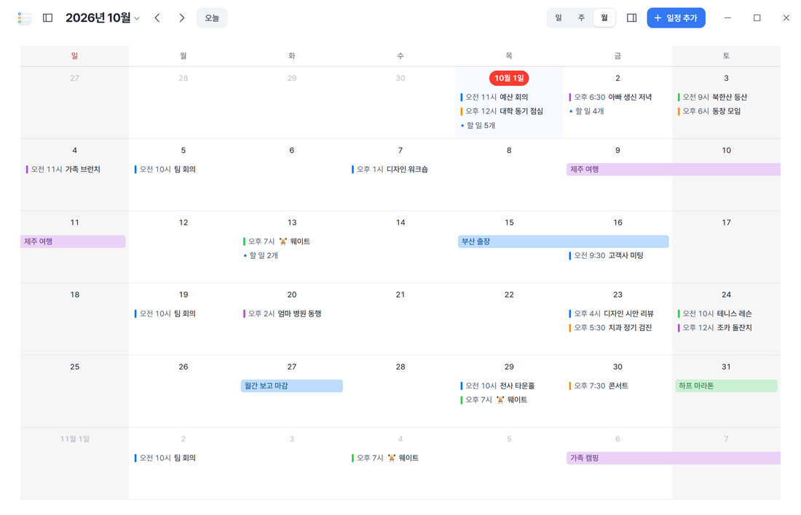
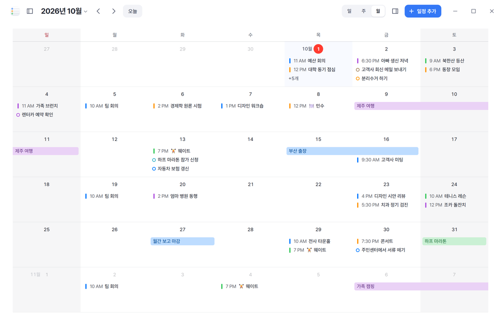
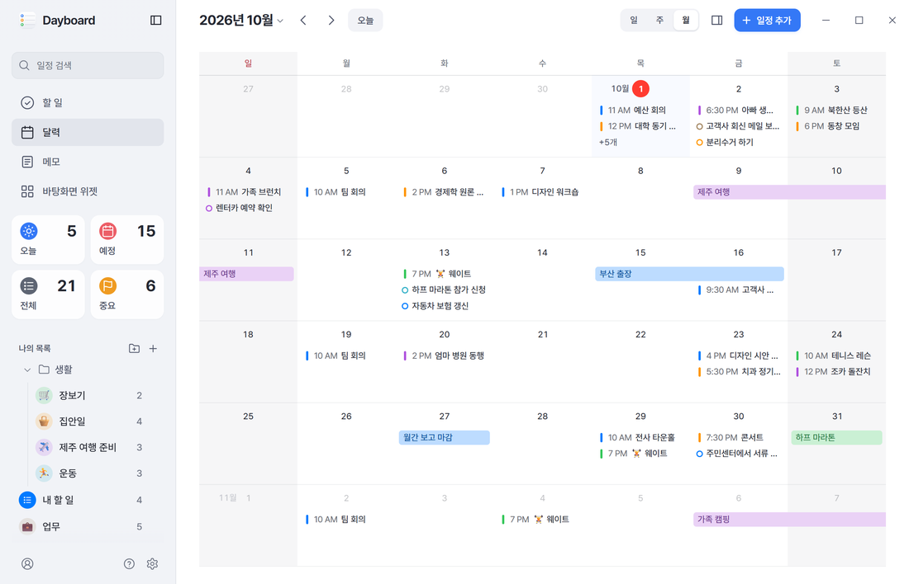
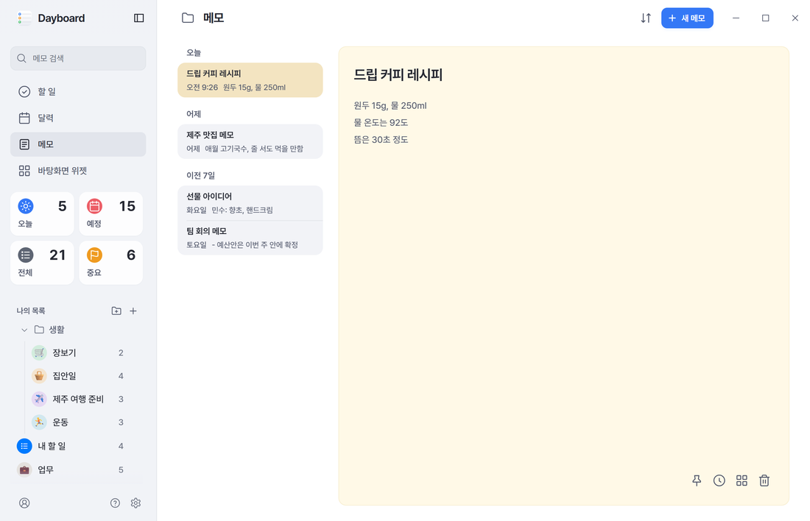
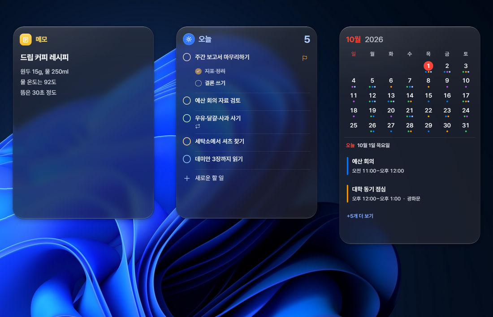

Dayboard
할 일과 일정을 현황판처럼
한눈에 보는 Windows 앱
Mac·iPhone처럼 깔끔한 화면에서, 오늘 할 일과 일정을 한곳에 모아 봐요.

할 일: 해야 할 일을 놓치지 않게
적어 두고, 끝나면 동그라미만 누르면 돼요.
- 날짜를 정하면 오늘·예정으로 저절로 모이고, 깃발을 누르면 중요로 모여요
- 목록과 그룹으로 나누고, 큰 일은 하위 할 일로 쪼개요
- 날짜와 알림, 반복을 걸어 둘 수 있어요
- 날짜가 있는 할 일은 달력에도 일정과 함께 보여요

달력: 떠오르는 대로 쓰면 일정이 돼요
날짜를 찾아 누르고, 시간을 고르고, 장소를 따로 넣을 필요 없어요. 생각나는 대로 쭉 쓰면 Dayboard가 날짜·시간·제목을 알아보고 달력에 저장해 줘요. 장소는 쉼표 뒤에 적으면 돼요.
10/6, 오후 2시~3시, 경제학 원론 시험, 대강의실→ 10월 6일 오후 2시~3시 · 경제학 원론 시험 · 대강의실
일정은 끌어서 옮기고, 늘려서 시간을 바꿔요.

자주 쓰는 일정: 매번 같은 일정은 낱말 하나로
점심 약속이나 퇴근 후 운동처럼 시간이 늘 같은 일정이 있어요. 낱말 하나에 시간과 아이콘을 한 번 정해 두면, 다음부터는 그 낱말만 쓰면 정해 둔 대로 저장돼요.
점심 민수→ 🍽️ 민수 · 낮 12시~1시웨이트→ 🏋️ 웨이트 · 저녁 7시~8시 반
메모: 가볍게 적고, 바로 찾아요
와이파이 비밀번호나 프린터 IP 주소처럼, 가끔 필요한데 막상 찾으면 없는 것들이 있어요. 적어 둔 포스트잇은 어디 뒀는지 모르겠고, 무거운 노트 앱은 켜고 찾는 데 한참 걸리죠. Dayboard 메모는 가볍게 적어 두고, 검색 한 번으로 바로 찾을 수 있어요. 자주 보는 메모는 바탕화면에 올려 둘 수 있어요.

위젯: 앱을 열지 않아도 바탕화면에서
할 일과 달력, 메모를 바탕화면에 올려 두고 바로 확인해요. 뒤 배경이 은은하게 비치는 리퀴드 글라스 디자인이고, 투명도도 원하는 만큼 조절돼요.

계정 연결
Microsoft나 Google 계정을 연결하면 할 일과 달력이 휴대폰이나 다른 PC와 맞춰지고, 메모도 PC끼리 맞출 수 있어요. iCloud는 달력만 연결돼요. 계정 없이 이 PC에서만 써도 돼요.
내려받기
아직 코드 서명이 없어서 Windows가 설치를 경고하거나 막을 수 있어요.